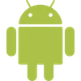

Más sobre la aplicación Billar
Introducción
El jugador puede golpear la bola blanca del billar como si se tratará del billar de mesa.
Es un juego simple para hacer uso de físicas y colisiones.
Su apariencia recuerda a cualquier mesa de billar, con sus colores caracteristicos.
Mecánicas de juego
La bola se golpea pulsando en ella y dirigiendo el dedo hacia atras, para controlar hacia donde se dirige la bola y con que fuerza la golpeamos. La linea blanca simboliza la fuerza con la que será golpeada y la roja hacia donde se dirigirá la bola.
El objetivo es el mismo que en el billar. Meter todas las bolas y al final meter la bola negra.
Sobre la programación
Todas las bolas pueden desaparecer en los agujeros negros, con la diferencia de que si introducimos la bola blanca vuelve a aparecer para seguir golpeando las demas.
Todas las bolas colisionan entre sí y con las paredes de la mesa.
Acceso al juego
Pueden ver el código en el enlace al repositorio de Github.
Información del proyecto
- CategoríaMultiplataforma
- IDEAndroid Studio
- Tecnologías


- Repositorio GitHub